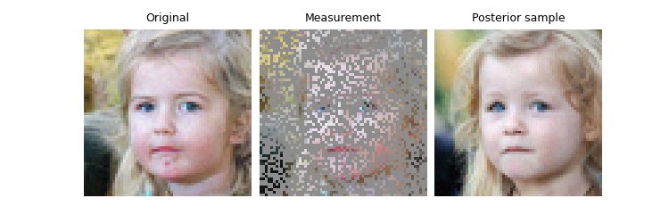
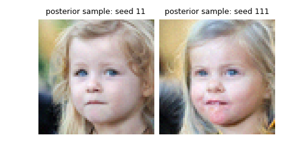
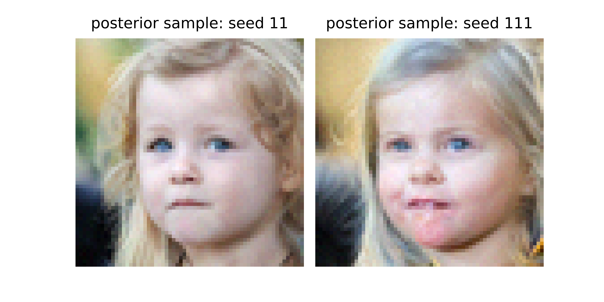
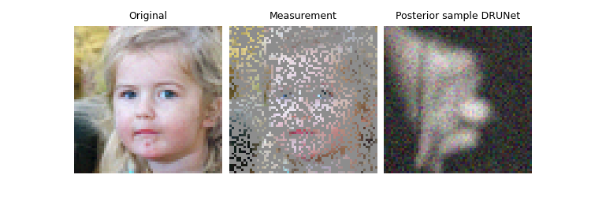
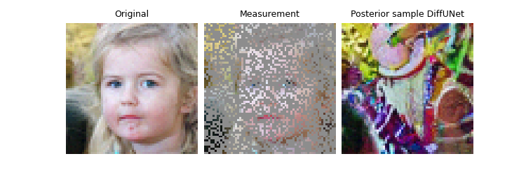
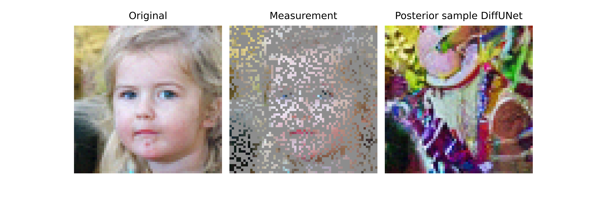

Note
Go to the end to download the full example code.
Posterior Sampling for Inverse Problems with Stochastic Differential Equations modeling.#
This demo shows you how to use
deepinv.sampling.PosteriorDiffusion to perform posterior sampling. It also can be used to perform unconditional image generation with arbitrary denoisers, if the data fidelity term is not specified.
This method requires:
A well-trained denoiser with varying noise levels (ideally with large noise levels) (e.g.,
deepinv.models.NCSNpp).A (noisy) data fidelity term (e.g.,
deepinv.sampling.DPSDataFidelity).Define a drift term \(f(x, t)\) and a diffusion term \(g(t)\) for the forward-time SDE. They can be defined through the
deepinv.sampling.DiffusionSDE(e.g.,deepinv.sampling.VarianceExplodingDiffusion).
The deepinv.sampling.PosteriorDiffusion class can be used to perform posterior sampling for inverse problems.
Consider the acquisition model:
This class defines the reverse-time SDE for the posterior distribution \(p(x|y)\) given the data \(y\):
where \(f\) is the drift term, \(g\) is the diffusion coefficient and \(w\) is the standard Brownian motion. The drift term and the diffusion coefficient are defined by the underlying (unconditional) forward-time SDE sde. The (conditional) score function \(\nabla_{x_t} \log p_t(x_t | y)\) can be decomposed using the Bayes’ rule:
The first term is the score function of the unconditional SDE, which is typically approximated by a MMSE denoiser (denoiser) using the well-known Tweedie’s formula, while the
second term is approximated by the (noisy) data-fidelity term (data_fidelity).
We implement various data-fidelity terms in the documentations.
Let us import the necessary modules, define the denoiser and the SDE.
In this example, we use the Variance-Exploding SDE, whose forward process is defined as:
import torch
import deepinv as dinv
from deepinv.models import NCSNpp, EDMPrecond
device = "cuda" if torch.cuda.is_available() else "cpu"
dtype = torch.float64
figsize = 2.5
from deepinv.sampling import (
PosteriorDiffusion,
DPSDataFidelity,
EulerSolver,
VarianceExplodingDiffusion,
)
from deepinv.optim import ZeroFidelity
# In this example, we use the pre-trained FFHQ-64 model from the
# EDM framework: https://arxiv.org/pdf/2206.00364 .
# The network architecture is from Song et al: https://arxiv.org/abs/2011.13456 .
unet = NCSNpp(pretrained="download")
denoiser = EDMPrecond(model=unet).to(device)
# The solution is obtained by calling the SDE object with a desired solver (here, Euler).
# The reproducibility of the SDE Solver class can be controlled by providing the pseudo-random number generator.
num_steps = 150
rng = torch.Generator(device).manual_seed(42)
timesteps = torch.linspace(1, 0.001, num_steps)
solver = EulerSolver(timesteps=timesteps, rng=rng)
sigma_min = 0.02
sigma_max = 20
sde = VarianceExplodingDiffusion(
sigma_max=sigma_max,
sigma_min=sigma_min,
alpha=0.5,
device=device,
dtype=dtype,
)
Downloading: "https://huggingface.co/deepinv/edm/resolve/main/ncsnpp-ffhq64-uncond-ve.pt?download=true" to /home/runner/.cache/torch/hub/checkpoints/ncsnpp-ffhq64-uncond-ve.pt
0%| | 0.00/240M [00:00<?, ?B/s]
11%|█ | 26.8M/240M [00:00<00:00, 280MB/s]
24%|██▎ | 56.5M/240M [00:00<00:00, 298MB/s]
36%|███▌ | 85.9M/240M [00:00<00:00, 302MB/s]
48%|████▊ | 116M/240M [00:00<00:00, 307MB/s]
62%|██████▏ | 148M/240M [00:00<00:00, 318MB/s]
75%|███████▍ | 180M/240M [00:00<00:00, 322MB/s]
88%|████████▊ | 210M/240M [00:00<00:00, 322MB/s]
100%|██████████| 240M/240M [00:00<00:00, 316MB/s]
Reverse-time SDE as sampling process#
When the data fidelity is not given, the posterior diffusion is equivalent to the unconditional diffusion. Sampling is performed by solving the reverse-time SDE. To do so, we generate a reverse-time trajectory.
model = PosteriorDiffusion(
data_fidelity=ZeroFidelity(),
sde=sde,
denoiser=denoiser,
solver=solver,
dtype=dtype,
device=device,
)
sample_seed_1, trajectory_seed_1 = model(
y=None,
physics=None,
x_init=(1, 3, 64, 64),
seed=1,
get_trajectory=True,
)
dinv.utils.plot(
sample_seed_1,
titles="Unconditional generation",
show=True,
save_fn="sde_sample.png",
figsize=(figsize, figsize),
)
dinv.utils.save_videos(
trajectory_seed_1.cpu()[::10],
time_dim=0,
titles=["VE-SDE Trajectory"],
save_fn="sde_trajectory.gif",
figsize=(figsize, figsize),
)


When the data fidelity is given, together with the measurements and the physics, this class can be used to perform posterior sampling for inverse problems. For example, consider the inpainting problem, where we have a noisy image and we want to recover the original image.
x = sample_seed_1
physics = dinv.physics.Inpainting(tensor_size=x.shape[1:], mask=0.4, device=device)
y = physics(x)
model = PosteriorDiffusion(
data_fidelity=DPSDataFidelity(denoiser=denoiser),
denoiser=denoiser,
sde=sde,
solver=solver,
dtype=dtype,
device=device,
)
# To perform posterior sampling, we need to provide the measurements, the physics and the solver.
# Moreover, when the physics is given, the initial point can be inferred from the physics if not given explicitly.
x_hat, trajectory = model(
y,
physics,
seed=11,
get_trajectory=True,
)
# Here, we plot the original image, the measurement and the posterior sample
dinv.utils.plot(
[x, y, x_hat],
show=True,
titles=["Original", "Measurement", "Posterior sample"],
save_fn="posterior_sample.png",
figsize=(figsize * 3, figsize),
)

dinv.utils.save_videos(
trajectory[::10],
time_dim=0,
save_fn="posterior_trajectory.gif",
figsize=(figsize, figsize),
)
We obtain the following posterior trajectory


Varying samples#
One can obtain varying samples by using a different seed.
To ensure the reproducibility, if the parameter rng is given, the same sample will
be generated when the same seed is used
# By changing the seed, we can obtain different samples:
x_hat_seed_111 = model(
y,
physics,
seed=111,
)
dinv.utils.plot(
[x_hat, x_hat_seed_111],
titles=[
"posterior sample: seed 11",
"posterior sample: seed 111",
],
show=True,
save_fn="posterior_samples.png",
figsize=(figsize * 2, figsize),
)

We obtain the following posterior trajectory

Plug-and-play Posterior Sampling with arbitrary denoisers#
The deepinv.sampling.PosteriorDiffusion class can be used together with any (well-trained) denoisers for posterior sampling.
For example, we can use the deepinv.models.DRUNet for posterior sampling.
We can also change the underlying SDE, for example change the sigma_max value.
sigma_min = 0.02
sigma_max = 2.0
rng = torch.Generator(device)
timesteps = torch.linspace(1, 0.001, 200)
solver = EulerSolver(timesteps=timesteps, rng=rng)
denoiser = dinv.models.DRUNet(pretrained="download").to(device)
sde = VarianceExplodingDiffusion(
sigma_max=sigma_max, sigma_min=sigma_min, alpha=0.1, device=device, dtype=dtype
)
# As a plug-and-play sampling method, we can also change the data fidelity term.
# But the sample quality depends on the quality of the denoiser and the data fidelity term.
model = PosteriorDiffusion(
data_fidelity=dinv.optim.L2(),
denoiser=denoiser,
sde=sde,
solver=solver,
dtype=dtype,
device=device,
)
# To perform posterior sampling, we need to provide the measurements, the physics and the solver.
x_hat, trajectory = model(
y,
physics,
seed=11,
get_trajectory=True,
)
# Here, we plot the original image, the measurement and the posterior sample
dinv.utils.plot(
[x, y, x_hat],
show=True,
titles=["Original", "Measurement", "Posterior sample DRUNet"],
figsize=(figsize * 3, figsize),
save_fn="posterior_sample_DRUNet.png",
)

We obtain the following posterior trajectory

We can switch to a different denoiser, for example, the DiffUNet denoiser from the EDM framework.
denoiser = dinv.models.DiffUNet(pretrained="download").to(device)
sigma_min = 0.02
sigma_max = 5.0
rng = torch.Generator(device)
timesteps = torch.linspace(1, 0.001, 200)
solver = EulerSolver(timesteps=timesteps, rng=rng)
sde = VarianceExplodingDiffusion(
sigma_max=sigma_max, sigma_min=sigma_min, alpha=0.5, device=device, dtype=dtype
)
model = PosteriorDiffusion(
data_fidelity=DPSDataFidelity(denoiser=denoiser),
denoiser=denoiser,
rescale=True,
sde=sde,
solver=solver,
dtype=dtype,
device=device,
)
# To perform posterior sampling, we need to provide the measurements, the physics and the solver.
x_hat, trajectory = model(
y,
physics,
seed=1,
get_trajectory=True,
)
# Here, we plot the original image, the measurement and the posterior sample
dinv.utils.plot(
[x, y, x_hat],
show=True,
titles=["Original", "Measurement", "Posterior sample DiffUNet"],
save_fn="posterior_sample_DiffUNet.png",
figsize=(figsize * 3, figsize),
)

We obtain the following posterior trajectory

Total running time of the script: (12 minutes 20.628 seconds)